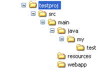

Setting up a simple EasyAnt project
In the course of this write up, you will be taken through basics of EasyAnt and a simple-and-live example of setting up an EasyAnt web application project as an example only.Prerequisite to your setting up an Easyant project means you have to have the Easyant environment correctly configured.
You need to set up EASYANT_HOME property. Point it to your EasyAnt path. For Windows users, do:
> set EASYANT_HOME=c:\path\to\easyantFor Unix,
> export EASYANT_HOME=/path/to/easyantThen add %EASYANT_HOME%/bin to your PATH variable.
Let us try to setup a project that builds to a Web Application Archive, or a WAR. Say, PROJECT_ROOT is the root directory for your project.
Module IVY
Your project is expected to have a module.ivy to define the build of your project. This is nearly a regular IVY specification file.<ivy-module version="2.0" xmlns:e="http://ant.apache.org/ivy/extra" xmlns:ea="http://www.easyant.org">The above is a standard ivy specification file, other than the 'ea:build' tag. Note also the use of the 'ea' namespace. The type attribute takes the build type the project wants to use. In our case, we intend to set up a standard WAR build project. The type attribute has a pattern - repository#artifact;version.
<info organisation="my.easyant.project" module="my-webapp" status="integration" >
<description>
This project is a sample of a java webapplication
</description>
<ea:build organisation="org.apache.easyant.buildtypes" module="build-webapp-java" revision="0.1">
<ea:property name="test.framework" value="testng"/>
</ea:build>
</info>
<configurations>
<conf name="default" visibility="public"/>
<conf name="test" visibility="private"/>
</configurations>
<publications>
<artifact type="war"/>
<artifact e:classifier="source"/>
</publications>
<dependencies>
<dependency org="org.testng" name="testng" rev="5.7" conf="test->master">
<artifact name="testng" type="jar" e:classifier="jdk15"/>
</dependency>
</dependencies>
</ivy-module>
The above file is a sufficient instruction to easyant to build a WAR using the current project. Only, you need to mind the source structure for this build to work.
Source Structure
Similar, to Maven, by default, if you are using a standard build type, you need to follow a standard directory structure. This should be as the build type expects to pick different resources to be present in different directories. Use the following: In the above directory structure, all your java sources should go into src/main/java directory. Create a DummyMain.java file inside src/java/my/test directory.
All resources that should move into WEB-INF/classes directory should go inside src/main/resources.
Entire src/main/webapp directory moves into the root of the web application WAR. For instance, you may keep WEB-INF directory inside this directory.
The module.ivy file should reside inside 'testproj' directory.
Any external dependencies of your project should be specified inside your module.ivy file, dependencies section.
Building the Project
The project is now ready to be built. You can simply run: easyant. You should see a 'target' directory created in your project root. The built war will reside inside the target/artifacts directory.You can go ahead and deploy it in your app-server.
Build Plugins
EasyAnt provides plugins that you can selectively choose to use in your project. These provide you convenience functionalities. E.g. Quick WAR deployments in Jetty, Xooki documentation, Coverage tools etc.In this tutorial, let us quickly take a look over how we may integrate Jetty with our current war.
Let us first include a 'Hello World' index.htm inside the src/main/webapp directory. These are the contents of our index.htm:
<html>Our module.ivy is the repository of all plugins that our project uses. So, we go ahead and include the Jetty plugin in our module.ivy.
<head></head>
<body>
<h3>Hello World !!</h3>
</body>
</html>
<ivy-module version="2.0" xmlns:e="http://ant.apache.org/ivy/extra" xmlns:ea="http://www.easyant.org">Note the addition of the ea:plugin tag.
<info organisation="my.easyant.project" module="my-webapp" status="integration" >
<description>
This project is a sample of a java webapplication
</description>
<ea:build organisation="org.apache.easyant.buildtypes" module="build-webapp-java" revision="0.1">
<ea:property name="test.framework" value="testng"/>
<ea:plugin organisation="org.apache.easyant.plugins" module="jetty-deploy" revision="0.1" as="jetty"/>
</ea:build>
</info>
<configurations>
<conf name="default" visibility="public"/>
<conf name="test" visibility="private"/>
</configurations>
<publications>
<artifact type="war"/>
<artifact e:classifier="source"/>
</publications>
<dependencies>
<dependency org="org.testng" name="testng" rev="5.7" conf="test->master">
<artifact name="testng" type="jar" e:classifier="jdk15"/>
</dependency>
</dependencies>
</ivy-module>
The above line instructs easyant to make the jetty-deploy plugin artifact inside the 'org.apache.easyant.plugins' repository, version 0.1, to be available in the current project.
The jetty-deploy module exposes a target called ':run' (by convention all public targets in EasyAnt start with a ':' and all private targets start with a '-'). Further, this target depends on the package phase of EasyAnt, which means that by the time this target is executed, the WAR would have been created and available for deployment on Jetty.
Because, in the new line added to module.ivy, the jetty-deploy module was added with an 'alias' jetty, you can run 'easyant jetty:run' to build and package your web application, and deploy it on jetty. The command launches jetty, and keeps displaying Jetty logs on console. You can now access your web application on browser. Try hitting http://localhost:8080 !
module.ant
If you want to add something to the default build types that come packaged with EasyAnt, you can write a module.ant file in your project root. This is called before EasyAnt executes any of its core build scripts.You can also include any convenience targets you find useful, that are specific to your project and do not come included in EasyAnt.